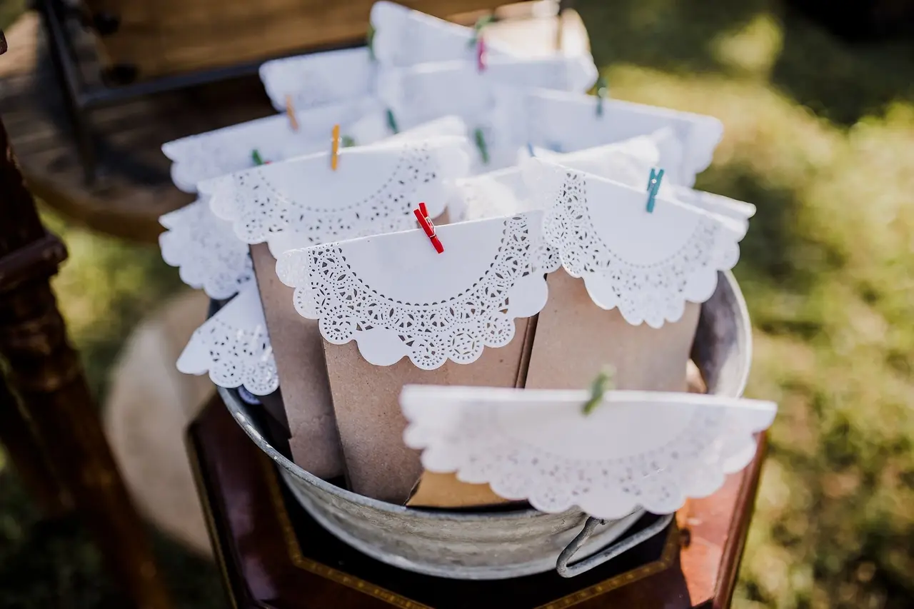
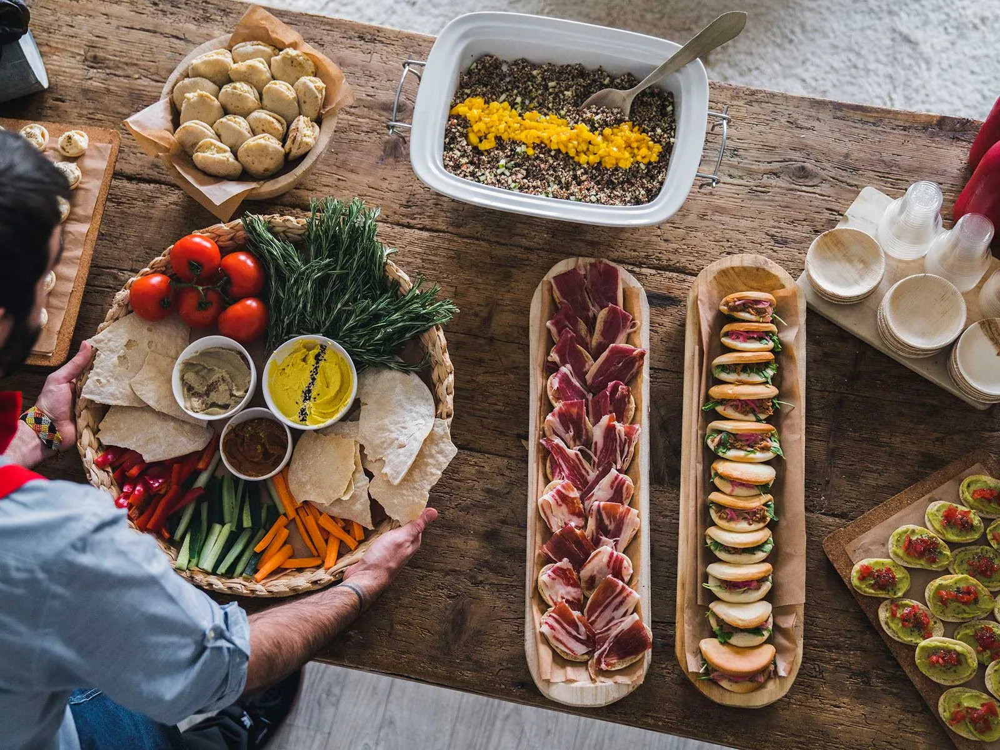
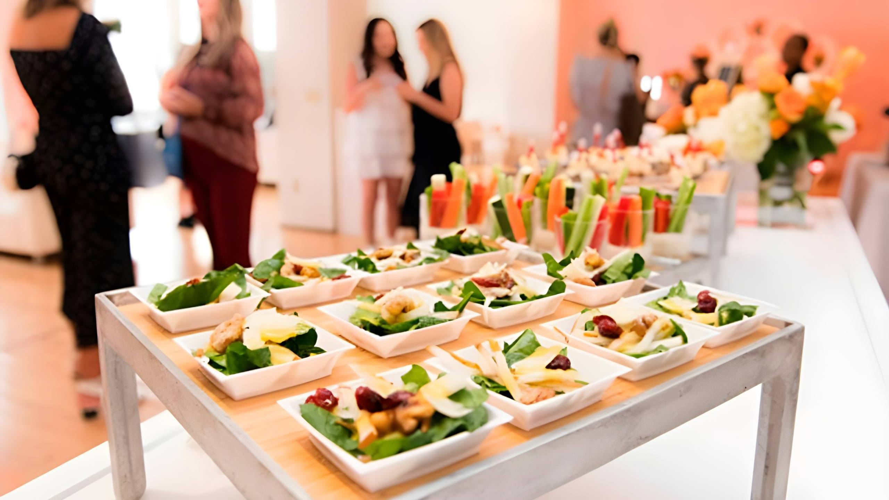
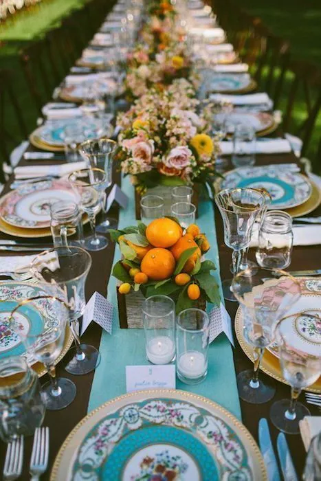

Tendencias del catering
Catering de bodas eco-friendly
Julia González | 25 de marzo de 2022
Cada vez más parejas buscan opciones sostenibles para su boda y el catering no es la excepción. Desde opciones vegetarianas hasta usar platos y cubiertos reutilizables, este catering ofrece soluciones eco-friendly para bodas.
Leer mas

Nuevos negocios de catering
Catering de comida tradicional en la era digital
Juan García | 12 de abril de 2022
Un nuevo negocio de catering se lanza al mercado ofreciendo comida tradicional, pero con un enfoque en la era digital. Ofrece la opción de pedir a través de una aplicación y recibir la comida en casa, una opción perfecta para aquellos que no tienen tiempo para cocinar pero quieren comer bien.
Leer mas

Eventos corporativos
Catering saludable para eventos de empresa
Ana López | 5 de mayo de 2022
Cada vez más empresas buscan opciones saludables para sus eventos y reuniones, y este catering ofrece exactamente eso. Desde opciones vegetarianas hasta platos sin gluten, este catering se adapta a todas las necesidades dietéticas mientras ofrece un delicioso menú.
Leer mas
Innovaciones en el catering
Catering con realidad virtual
Martín Pérez | 18 de mayo de 2022
Este catering ofrece una experiencia única a través de la realidad virtual. Los comensales pueden disfrutar de una experiencia gastronómica inmersiva, viendo cómo se preparan los platos y los ingredientes mientras los prueban. Una innovación en el mundo del catering.
Leer mas

Tendencias del catering
Catering para eventos de temática vintage
Sofía Torres | 30 de mayo de 2022
Las fiestas de temática vintage están en auge y este catering ofrece una opción deliciosa y acorde a la temática. Desde mini hamburguesas hasta postres vintage, este catering ofrece opciones para todos los gustos mientras se adapta al estilo.
Leer mas